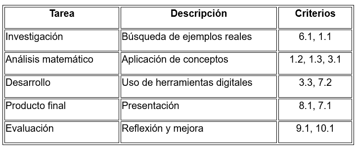

GUÍA DIDÁCTICA
Esta Situación de Aprendizaje está dirigida a alumnado de 4º de ESO dentro de la materia de Matemáticas. Se centra en la aplicación de la geometría en contextos reales, fomentando un aprendizaje significativo y competencial mediante metodologías activas. Se desarrolla en un grupo heterogéneo, con diferentes niveles de competencia matemática y digital, lo que justifica el uso de estrategias inclusivas y herramientas digitales accesibles.
1. Objetivos didácticos
- Aplicar conceptos geométricos a situaciones reales
- Interpretar y representar información matemática
- Desarrollar la competencia digital mediante herramientas como GeoGebra y Canva
- Fomentar el trabajo cooperativo
- Mejorar la comunicación matemáticça
2. Metodología
Se emplea una metodología activa basada en:
- Aprendizaje Basado en Proyectos (ABP)
- Trabajo cooperativo
- Aprendizaje significativo
- Uso de herramientas digitales
El alumnado trabaja en grupos, investiga, analiza y crea un producto final aplicando los contenidos trabajados.
3. Atención a la diversidad (DUA)
Se aplican principios del Diseño Universal para el Aprendizaje:
- Múltiples formas de representación: vídeos, gráficos, explicaciones visuales
- Múltiples formas de acción y expresión: póster, presentación, infografía
- Múltiples formas de implicación: elección de ejemplos reales cercanos al alumnado
Además de adaptación de tareas, apoyo entre iguales y uso de plantillas guiadas
4. Secuenciación y criterios de evaluación

5. Evaluación
Se emplea una evaluación continua y formativa mediante:
- Rúbrica de evaluación
- Cuestionario en Google Forms
- Se realiza triangulación de datos para obtener una visión completa del aprendizaje.
6. Evaluación de la práctica docente
Tras la implementación se analizarán los resultados del alumnado, las dificultades encontradas y el nivel de motivación para ajustar futuras ediciones, mejorar el método y adaptar los recursos.
7. Gestión de problemas técnicos
Los posibles problemas basados en experiencias previas son:
- Fallos de conexión
- Dificultades con herramientas digitales
- Diferente nivel digital del alumnado
Para ello, se lleva por si acaso: material descargable, explicaciones guiadas y alternativas analógicas (en papel)